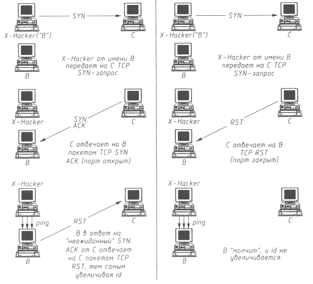

АТАКА НА INTERNET
Скрытая атака по FTP
Первым методом анонимного сканирования является метод, получивший название FTP Bounce Attack (скрытая атака по FTP). Протокол FTP (RFC 959) имеет ряд, как нам кажется, чрезвычайно интересных и недостаточно описанных функций, одна из которых - возможность создания так называемых "proxy" ftp-соединений с FTP-сервера. Если программная реализация FTP-сервера поддерживает режим proxy, то любой пользователь (и анонимный в том числе) может, подключившись к серверу, создать процесс DTP-server (Data Transfer Process - процесс передачи данных) для передачи файла с этого FTP-сервера на любой другой сервер в Internet. Функциональность данной возможности протокола FTP вызывает некоторое сомнение, так как в обычной ситуации ftp-клиент, подключающийся к серверу, передает и получает файлы либо непосредственно от себя, либо для себя. Представить иной вариант действий, на наш взгляд, достаточно сложно, но, видимо, создатели протокола FTP для его "будущего" развития предусмотрели подобную возможность, которая теперь выглядит несколько архаичной и отнюдь не безопасной.
Эта особенность протокола FTP позволяет предложить метод TCP-сканирования с использованием proxy ftp-сервера, состоящий в следующем: ftp-серверу после подключения выдается команда PORT с параметрами IP-адреса и TCP-порта объекта сканирования. Далее следует выполнить команду LIST, по которой FTP-сервер попытается прочитать текущий каталог на объекте, посылая на указанный в команде PORT порт назначения TCP SYN-запрос. Если порт на объекте открыт, то на сервер приходит ответ TCP SYN АСК и FTP-клиент получает ответы "150" и "226", если же порт закрыт, то ответ будет таким:
425. Can't Build Data Connection: Connection Refused
(425. Невозможно установить соединение: в соединении отказано).
Далее в цикле FTP-серверу последовательно выдаются команды PORT и LIST и осуществляется сканирование разных портов.
Данный метод вплоть до конца 1998 года был единственным и поистине уникальным методом "невидимого" анонимного сканирования (уникальным он остается и по сей день). Основная проблема взломщиков всегда состояла в невозможности скрыть источник сканирования, так как требовалось получать ответы на передаваемые запросы. Кроме того, в некоторых случаях межсетевой экран (МЭ) мог фильтровать запросы с неизвестных IP-адресов, поэтому данный метод совершил революцию в сканировании, так как, во-первых, позволял скрыть адрес кракера и, во-вторых, давал возможность сканировать контролируемую МЭ подсеть, используя внутренний расположенный за МЭ ftp-сервер.
Приведем список появляющихся при подключении заставок, генерируемых программами реализации FTP-серверов, которые поддерживают режим proxy и па которых данный метод работает.
220 xxxxxxx.com FTP server (Version wu-2.4(3) Wed Dec 14 ...) ready. 220 xxx.xxx.xxx.edu FTP server ready. 220 xx.Telcom.xxxx.EDU FTP server (Version wu-2.4(3) Tue Jun 11 ...) ready. 220 lem FTP server (SunOS 4.1) ready. 220 xxx.xxx.es FTP server (Version wu-2.4(11) Sat Apr 27 ...) ready. 220 elios FTP server (SunOS 4.1) ready
Следующие версии реализации FTP не поддерживают proxy, и метод соответственно пс работает.
220 wcarchive.cdrom.com FTP server (Version DG-2.0.39 Sun May 4 ...) ready. 220 xxx.xx.xxxxx.EDU Version wu-2.4.2-academ[BETA-12](1) Fri Feb 7 220 ftp Microsoft FTP Service (Version 3.0). 220 xxx FTP server (Version wu-2.4.2-academ[BETA-11](1) Tue Sep 3 ...) ready. 220 xxx.unc.edu FTP server (Version wu-2.4.2-academ[BETA-13](6) ...) ready.
Сканирование с использованием "немого" хоста
Сальвадор Сапфилинпо (Salvatore Sanfilippo) из Intesis Security Lab впервые заявил об этом методе 18 декабря 1998 года в конференции BUGTRAQ. Оригинальное название метода Dumb host scan переводится как "сканирование с использованием "немого" хоста". Основные положения, лежащие в основе метода (рис. 5.1), cостоят в следующем:
| С каждым переданным пакетом значение ID в заголовке IP-пакета обычно увеличивается на 1. |
- хост отвечает на TCP SYN-3aпpoc TCP SYN ACK, если порт открыт; и TCP RST, если порт закрыт;
- существует возможность узнать количество пакетов, переданных хостом, но параметру ID в заголовке IP;
- хост отвечает TCP RST на TCP SYN ACK и ничего не отвечает на TCP RST.
| Естественно, это происходит только в случае "неожиданного" прихода таких пакетов (при ip spoofing, например). |

Рис. 5.1. Сканирование методом Dumb host scan с открытым (слева) и закрытым (справа) портом X на хосте C
Рассмотрим, как работает данный метод.
Пусть X-Hacker - хост атакующего, откуда осуществляется сканирование, объект В - "тихий" хост (обычный хост, который не будет передавать пакеты, пока происходит скапирование хоста С; таких хостов вполне достаточно в Internet), а хост С - объект сканирования. Хост X-Hacker при помощи, например, утилиты hping контролирует число исходящих от хоста В пакетов по ID из заголовка IP, имеющего вид:
#hping B -r HPING B (eth0 194.94.94.94): no flags are set, 40 data bytes 60 bytes from 194.94.94.94: flags=RA seq=0 ttl=64 id=41660 win=0 time=1.2 ms 60 bytes from 194.94.94.94: flags=RA seq=1 ttl=64 id=+1 win=0 time=75 ms 60 bytes from 194.94.94.94: flags=RA seq=2 ttl=64 id=+1 win=0 time=91 ms 60 bytes from 194.94.94.94: flags=RA seq=3 ttl=64 id=+1 win=0 time=90 ms 60 bytes from 194.94.94.94: flags=RA seq=4 ttl=64 id=+1 win=0 time=91 ms 60 bytes from 194.94.94.94: flags=RA seq=5 ttl=64 id=+1 win=0 time=87 ms
Как видно, ID увеличивается с каждым пакетом на 1, следовательно, хост В - именно тот "тихий" хост, который нужен кракеру.
X-Hacker посылает TCP SYN-запрос на порт Х хоста С от имени В (автор метода предлагает для этого использовать утилиту hping с его сайта http://www.kyuzz.org/antirez, но можно применять и любые другие программные средства). Если порт Х хоста С открыт, то хост С пошлет на хост В ответ TCP SYN АСК (хост С не может знать, что этот пакет на самом деле пришел от X-Hacker). В этом случае объект В в ответ на TCP SYN АСК ответит на С пакетом TCP RST. Если атакующий пошлет на С определенное количество TCP SYN от имени хоста В, то В, получив несколько TCP SYN АСК, ответит столькими же TCP RST, и на хосте X-Hacker будет видно, что В посылает пакеты, следовательно, порт Х открыт. Выглядит это следующим образом:
60 bytes from 194.94.94.94: flags=RA seq=17 ttl=64 id=+1 win=0 time=96 ms 60 bytes from 194.94.94.94: flags=RA seq=18 ttl=64 id=+1 win=0 time=80 ms 60 bytes from 194.94.94.94: flags=RA seq=19 ttl=64 id=+2 win=0 time=83 ms 60 bytes from 194.94.94.94: flags=RA seq=20 ttl=64 id=+3 win=0 time=94 ms 60 bytes from 194.94.94.94: flags=RA seq=21 ttl=64 id=+1 win=0 time=92 ms 60 bytes from 194.94.94.94: flags=RA seq=22 ttl=64 id=+2 win=0 time=82 ms
Порт открыт!
В том случае, если порт Х хоста С закрыт, то передача на С нескольких TCP SYN-пакетов от имени В вызовет ответный пакет TCP RST. Хост В, получив от хоста С такой пакет, проигнорирует его. Выглядит это так:
60 bytes from 194.94.94.94: flags=RA seq=52 ttl=64 id=+1 win=0 time=85 ms 60 bytes from 194.94.94.94: flags=RA seq=53 ttl=64 id=+1 win=0 time=83 ms 60 bytes from 194.94.94.94: flags=RA seq=54 ttl=64 id=+1 win=0 time=93 ms 60 bytes from 194.94.94.94: flags=RA seq=55 ttl=64 id=+1 win=0 time=74 ms 60 bytes from 194.94.94.94: flags=RA seq=56 ttl=64 id=+1 win=0 time=95 ms 60 bytes from 194.94.94.94: flags=RA seq=57 ttl=64 id=+1 win=0 time=81 ms
Порт закрыт!
Сканирование через proxy-сервер
Еще один метод или, скорее, способ сканирования объекта, при котором можно остаться анонимным, - сканирование с использованием промежуточного хоста (или цепочки хостов, что еще более надежно). В данном случае предлагаем действовать следующими двумя способами.
Первый способ состоит в использовании анонимных Free Telnet Account (свободный Telnet-доступ) которых в Internet довольно много. При помощи telnet можно, подключившись к данному хосту, от его имени веcти сканирование любого хоста в Internet. Для этого пишется небольшой скрипт, который, последовательно изменяя порт назначения, будет выдавать следующую команду: telnet Scan_Host_Name Target_TCP_Port.
Если порт закрыт, telnet вернет сообщение Connection Refused (В соединении отказано) или не вернет ничего. Если же порт открыт, появится заставка соответствующей службы.
Второй способ заключается в использовании любимых всеми кракерами WinGate-серверов. WinGate - это обычная proxy-программа, позволяющая через сервер такого типа выходить в Internet, где можно найти немало WinGate-серверов, администраторы которых разрешают анонимное подключение к ним с любых IP-адресов. Это приводит к тому, что кракер получает прекрасный промежуточный хост, от имени (с IP-адреса) которого, используя различные прикладные службы (telnet, ftp и т. д.), он может вести работу с любыми объектами в Internet, сохраняя при этом полную и столь желанную для него анонимность. WinGate-сервер можно использовать для сканирования по той же "telnet-методике", которая описана выше.
В заключение хотелось бы отметить неадекватную, на наш взгляд, реакцию многих сетевых администраторов, обнаруживших сканирование их сетей: обычно реакция на него практически ничем не отличается от реакции на уже осуществленное воздействие. Да, безусловно, удаленный анализ может являться предвестником атаки, но может и не являться. Сам же по себе он не причиняет никакого вреда и не наносит никакого ущерба объекту. Кроме того, описанные выше методы позволяют взломщику скрыть свой IP-адрес и подставить вместо себя ничего не подозревающего администратора хоста, от имени которого осуществлялось сканирование. Следовательно, обвинять кого-то в попытке сканирования бессмысленно: во-первых, это не атака, а, во-вторых, доказать злой умысел из-за методов "невидимого" сканирования невозможно.
В 1996 году произошел небольшой инцидент, связанный с нашей попыткой сканирования одной из подсетей. Желая узнать, что за хосты находятся в нашей подсети, мы воспользовались последней версией программы SATAN (см. главу 9). В результате наша невинная попытка сканирования была обнаружена бдительным администратором одного из хостов, принадлежащих, видимо, какой-то спецслужбе, и мы получили гневные письма с угрозами скорой хакерской расправы и фразами типа: "Хакер являлся пользователем root и действовал с такого-то хоста". Было довольно смешно читать подобные гневные письма и объяснять, что если бы у нас был злой умысел (хотя откуда он мог взяться?), то уж, наверное, мы бы сделали так, чтобы нас невозможно было вычислить.
Несмотря на то, что эта история довольно старая, но, на наш взгляд, очень поучительная, так как и на сегодняшний день вряд ли что-либо в данной области принципиально изменилось, и сканирование до сих пор многими приравнивается к атаке. Поэтому все желающие осуществлять сканирование должны быть готовы к подобной неадекватной реакции сетевых администраторов.
| « | » |